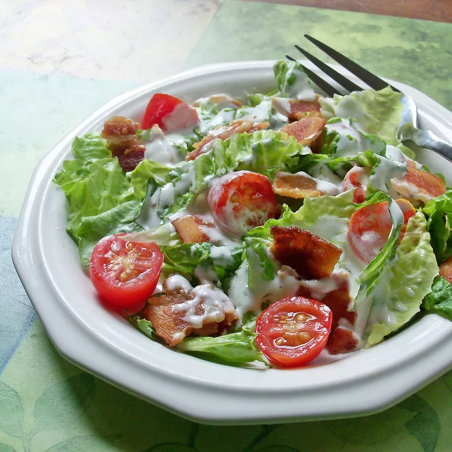

BLT Salad
allrecipes link

Description
This BLT salad is reminiscent of the classic bacon, lettuce, and tomato sandwich. It's a great summertime salad!
Ingredients
- Bacon
- Mayonnaise
- Milk
- Garlic Powder
- Black Pepper
- Salt
- Lettuce
- Tomato
- Croutons
Steps
- Place bacon in a large skillet and cook over medium-high heat, turning occasionally, until evenly browned, about 10 minutes. Drain bacon slices on paper towels; crumble and set aside
- Combine mayonnaise, milk, garlic powder, and black pepper together in a blender or food processor; blend until smooth. Season with salt.
- Combine lettuce, crumbled bacon, tomatoes, and croutons in a large salad bowl. Toss with dressing, and serve immediately.